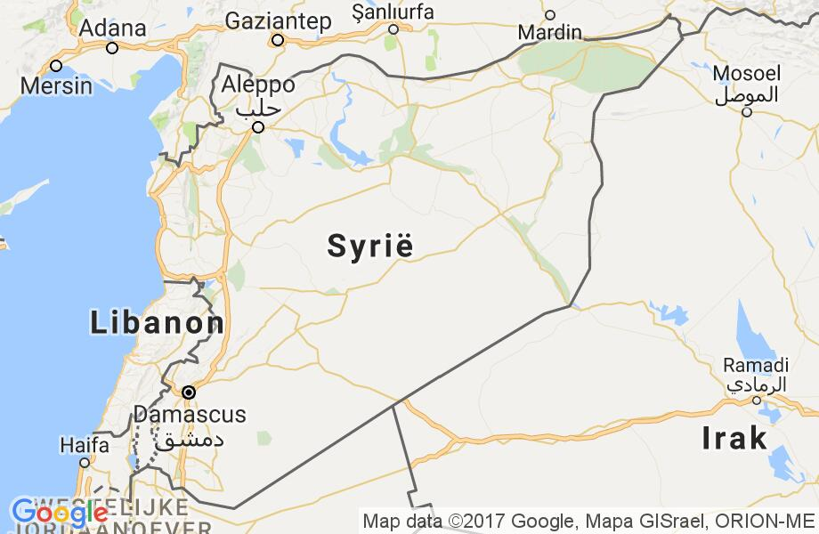
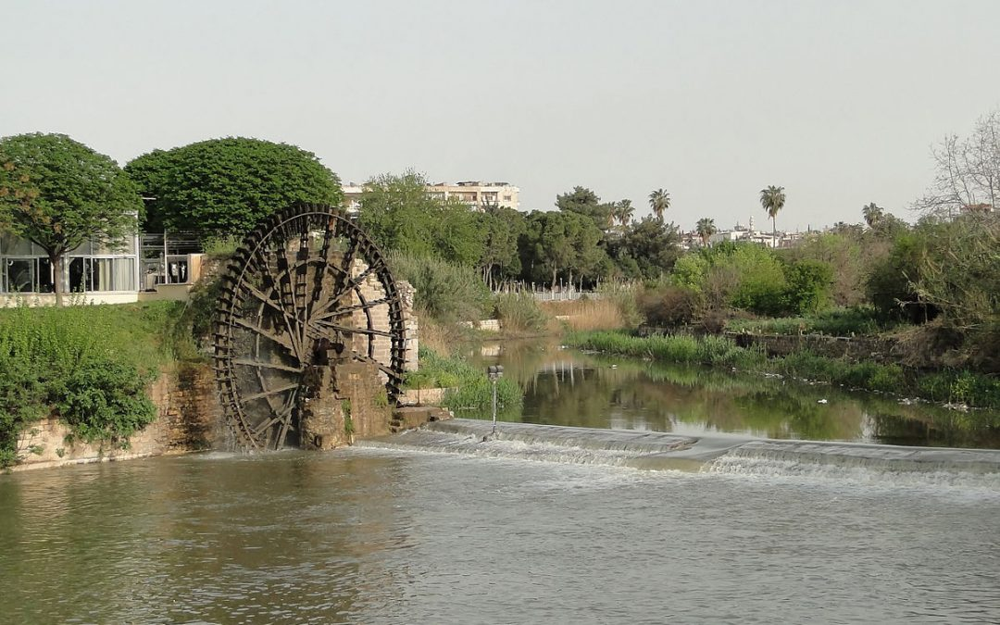
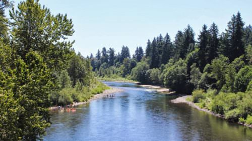
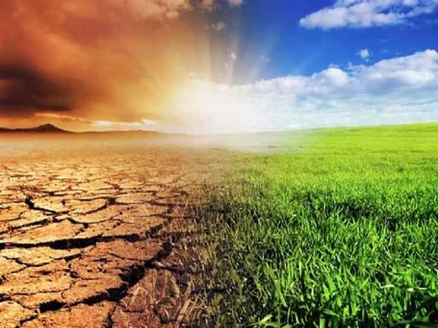

Syrië is geschreven door Syrië, waarvan de officiële naam de Syrische Arabische Republiek is, een Arabisch land in West-Azië aan
de oostkust van de Middellandse Zee, in een gebied dat wordt beschouwd als de verbinding tussen Azië, Europa en Afrika, in het
noordelijke deel van de Levant. Het heeft een gemeenschappelijke grens met Jordanië, Zuid, Oost-Irak, Turkije, Noord,
Libanon West, en de Golan Hoogten in Zuid-West bezette Palestina .

Damascus, de hoofdstad van de Syrische Arabische Republiek, en het centrum van Damascus governorate,
is een van de oudste steden ter wereld met bijna elf duizend jaar geschiedenis, en de oudste stad - hoofdstad ter wereld.
Het is sinds 635 de hoofdstad van Syrië .Damascus was de hoofdstad van de grootste islamitische staat in de geschiedenis,
de staat Umayad en een plaats voor literatuur, poëzie, wetenschap, wetenschappers en cultuur.

Syrië is rijk aan waterbronnen, of het nu rivieren, meren of ondergrondse bronnen zijn. De grootste rivier
die door Syrië stroomt is de rivier de Eufraat. Het Syrische regime, dat Syrië binnenkomt vanuit Turkije en zijn
oostelijke regio doorkruist naar Irak, heeft een totale lengte van 675 km op het grondgebied van de Republiek,
samen met een aantal belangrijke zijrivieren, Met name de 460 km lange Balkh-rivier en de Khatour-rivier.

De vegetatie in Syrië is gevarieerd in de centrale en westelijke regio's en is contrastrijk in de Badia Sham
regio's en de oostelijke regio. Syrië heeft 30 natuurreservaten; De meest rijke Syrische governoraten in termen
van bossen en vegetatie dekken, 31% van de totale bossen van de Republiek, gevolgd door de regio van de jungle vlakte,
zijn ongeveer 12%. Syrië heeft ongeveer 3,500 soorten planten en bomen.

Het klimaat in Syrië is geclassificeerd in twee grote populaties, namelijk een mediterraan klimaat in
het kustgebied en de nabijgelegen gebieden, en droog in andere regio's. het mediterrane klimaat wordt
gekenmerkt door een warme en droge zomer en een koude en regenachtige winter met twee overgangsseizoenen
:Herfst en lente.
